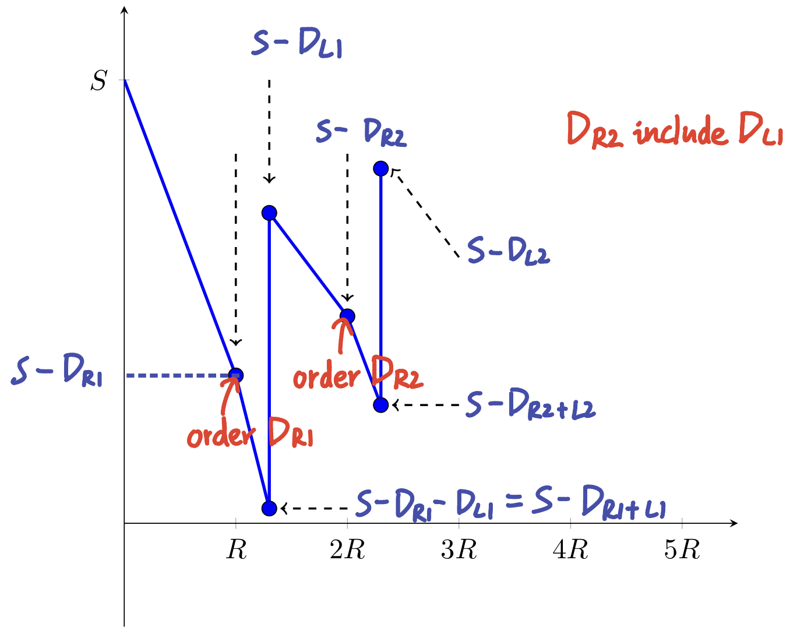

Multi-period Inventory Model with Uncertain Demand
Two types of inventory polices: continuous view vs. periodic view
Three performance measures: E[Cost] and two service measures (stockout probability
and fillrate
1. EOQ with Uncertain Demand (Ch 16.6)
The EOQ model is a continuous review poliy (inventory level can be monitored continuously in time and an order is placed as soon as the inventory level hits a reorder point)
K= set up cost per order
h= holding cost per item per time
L= lead time (positive, could be constant or stochastic)
D= demand (annually, stochastic)
cB= backorder cost per item
OHI(t)= on-hand (on hand) inventory at time t
B(t)= # backordered items at time t
I(t)=OHI(t)−B(t)
Br= # backordered items during the lead time with reorder point r
q= order quantity (decision varaible)
r= reorder point (decision varaible)
Derived Notations:
ss=r−E[X] (safety stock)
average stock level =ss+q/2
X is a random variable representing demand during lead time
If demand during each period is independent and L constant E[X]=L⋅E[D] and Var(X)=L⋅Var(D)
If demand during each period is independent, as well as L E[X]=E[L]E[D] and Var(X)=E[L]Var(D)+E2[D]Var(L)
1.1 Back-ordered Case
Back-ordered means that the customer still want the late items, but we need to pay some compensate (back-ordered cost). Equation of total cost: TC(q,r)=set up cost + holding cost + backordered cost + no-care
"no-care" indicates the costs that have nothing to do with q,r, including purchasing cost (E[D]p), in-transit cost (E[D]Lh)
Special Case: normally distributed X
From the last part of section 1.1, we have β=qσXL(σXr−μX)
2.2 Stockout Probablity
Stockout Probablity=α=Pr(X>r)
Expected number of cycles with stockout for a year = α(E[D]/q)
Quick Approach:
set q∗=EOQ
solve r for either α or β
Useful properties of Gamma
(a) If G1,G2∼Γ(k,θ) and they are independent, then G1+G2∼Γ(k1+k2,θ)
(b) If G∼Γ(k,θ), then cG∼Γ(k,cθ) for a real constant c
3. Order Up To Policy // Base-stock Policy (Ch 16.8)
This is a periodic review policy: Every R periods, we order up to S. When we implement it, we observe the on-order inventory, and place a replenishment order every R period in the amount of
D= annual demand
K= setup cost per order
J= cost of reviewing inventory level
h= holding cost per item per year
cB= backordered cost per item
L= lead time
DR= demand during R
DL+R= demand during L+R time
BS= # demand not met on time during a cycle
Our decision variables are order-up-to quantity S and review period R

where
Orders are placed at R,2R,3R,...
Cycle periods are [nR+L,(n+1)R+L],n=1,2,...
Inventory level at each:
Cycle start point =S−DL (In picture above, the first cycle start at S−DL1)
Cycle end point =S−DR+L
Review period =S−DR
Expected order quantity=E[DR]=RE[D]
Stockout occurs when S−DR+L<0⟺S−DR≤DL
The expected number of lost demand is: E[BS]=E[(DL+R−S)+]
3.1 Minimize Expected Total Cost
Backordered Case:
By solving ∂E[TC(R,S)]/∂S
Pr(DL+R>S)=cBhR
In (q,r), when we replace q by q≈E[DR]=RE[D], we have Pr(X>r)=cBE[D]hq≈cBhR
Lostsale Case:
Pr(DL+R>S)=hR+cLShR
Similarly, in (q,r) Pr(X>r)=hq+cLSE[D]hq≈hR+cLShR
Determination of R:
If a company uses the (R,S) policy, it is likely that R is given. But if it's not given and has to be determined, then one may want to make the shape of I(t) graph resembling EOQ graph number of orders=EOQE[D]=R1
then
R=E[D]EOQ and EOQ=h2(K+J)E[D]
3.2 Service Measures
Fillrate:
Unfillrate=β=E[D]E[BS]R1
where E[BS]=E[(X−S)+]=E[(DL+R−S)+]
For normally distributed demand:
constant L
r.v. L
X=
DL+R
DL+R
μX=
(L+R)E[D]
E[L+R]E[D]=(E[L]+R)E[D]
σX2=
(L+R)σD2
E[L+R]σD2+Var(L+R)E2[D]
E[BS]=
σXL(σXS−μX)
Stockout:
α=Pr(Stockout)=Pr(X>S)=Pr(DL+R>S)
For normally distributed demand, Pr(Stockout)=1−Φ(σXS−μX)
4. (s,S) Policy
Useful when orders come in bulk.
Continuous(s,S):
As soon as the OOI(t)<s (on-order inventory at time t), order S−OOI(t)
Very difficult to find the optimal s and S. Using the fact that it is similar to the (q,r) policy, one can approximate: s=r and S=q+r
Periodic(s,S):
Inventory is checked only every fixed interval. Let n represent the end of each review interval.
If OOI(n)≤S, order S−OOI(n)
Otherwise, do not order
Difficult to find the optimal s and S. For a simple model, a discrete-time Markov chain can be used to find the optimal s and S.